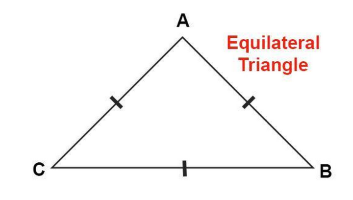
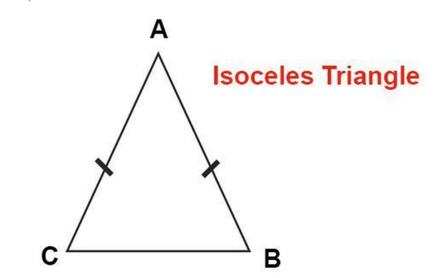
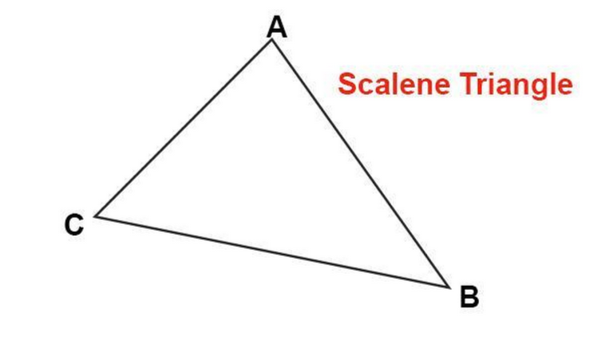

The triangle-tracker is able to take in any lengths and determine what kind of triangle will be formed out of those lengths provided by the user. As you know, there are three types of triangles: equilateral triangle, isosceles triangle and scalene triangle (diagrams shown below) . However, if the lengths are not suitable to form a triangle the tracker will also alert the user.
  It's very simple!The user is expected to enter the legths in the form below and click on the check out button. Within the shortest time possible he/she will identify which triangle is formed from those measurements.Why don't you try it out!